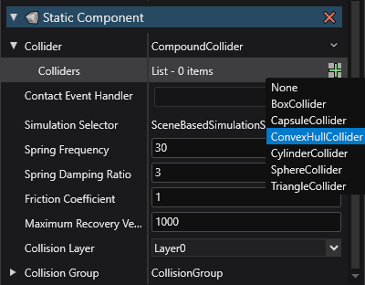

Collider Shapes
Beginner Designer
Each collidables should have a collider defining its shape. You can set them through the Property Grid.

Empty
Empty do not collide with other objects, they are mostly used to anchor bodies with constraints.
Compound
A compound collider is a shape made up of a bunch of more primitive shapes, most of these are self-explanatory, while Convex Hull has a section describing it in more detail below.

Those individual primitives can intersect between each other, and don't necessarily have to match the model they are attached to. Each shape has additional properties including size, orientation, offset, and so on.
Meshes
Mesh colliders use 3D models as the collision shape itself. They are significantly slower than compounds, use them only when building a compound collider would be counter-productive.
Warning
Never use mesh colliders for body collidables, use them only for statics, they are far too slow to be used as bodies. If you absolutely need a more complex shape than the primitive ones, use a convex hull instead.
Convex Hulls
A convex hull is a convex shape that envelopes another. For example, the convex hull of the Eiffel Tower would be a pyramid large enough to contain the entire tower without any bits poking through.
Convex shapes are easier to test for collision, simulate and find intersections with, reducing the compute load physics engine have to deal with compared to their mesh counterpart.
Creating a Convex Hull
In the Asset View pane, press the Add asset button, hover on the Physics-Bepu option and select Convex hull

A new window will open prompting you to select a model asset, select the asset you want to create this hull from and press Ok.
You can now add this new hull to one of your collidable.
Select the entity you want to add this Convex Hull to, add in a collidable component as is described in the static or body section.
Next to
Colliders, click (Add) and select
(Add) and select ConvexHullCollider
Set the
Hullproperty to your newly created hull by pressing on the hand icon
Performance Consideration
The following are relevant excerpts from Bepu's documentation
Use simple shapes whenever possible. Spheres and capsules are fastest followed by boxes, cylinders, and finally convex hulls. While cylinders and convex hulls are not slow in an absolute sense, they can be an order of magnitude slower than spheres and capsules.
While you shouldn't be too afraid of cylinders and convex hulls (they're still pretty fast), it's hard to beat the simpler shapes.
If you need to use a convex hull, use the minimum number of vertices needed to approximate the shape. The cost of hull collision detection is proportional to their complexity.
If you really, definitely need a mobile mesh, especially one that needs to collide with other meshes, spend a while confirming that you really, definitely, seriously need it and there is no other option, and then use a compound of simple shapes instead.
Okay, so maybe you actually truly really seriously need an actual mobile mesh. Keep the number of triangles to the minimum necessary to approximate the desired shape, and try to keep the triangles fairly uniform in size. Long sliver-like triangles can end up with large and inefficient bounding boxes. Static meshes follow the same optimization guidelines. Don't be surprised when you run into behavioral issues associated with infinitely thin one-sided triangles not colliding with each other and relatively crappy performance.